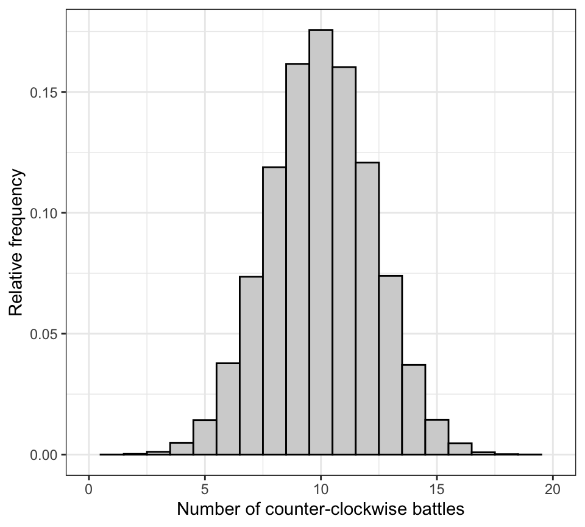

library(dplyr)
library(ggplot2)
library(readr)
library(infer)
library(biol202)9 Hypothesis testing
Tutorial learning objectives
- Learn the steps to conducting a hypothesis test
- Learn how to simulate a null distribution (using a binomial distribution example)
- Learn how to calculate the P-value
- Learn how write concluding statements for hypothesis tests
9.1 Load packages and import data
Load the packages we need for this tutorial:
Load the damselfly dataset:
data(damselfly)Get an overview of the dataset:
damselfly %>%
glimpse()
#> Rows: 20
#> Columns: 1
#> $ direction <fct> clockwise, counter_clockwise, counter_clockwise, clockwise, …And view the first handful of rows:
damselfly
#> # A tibble: 20 × 1
#> direction
#> <fct>
#> 1 clockwise
#> 2 counter_clockwise
#> 3 counter_clockwise
#> 4 clockwise
#> 5 counter_clockwise
#> 6 counter_clockwise
#> 7 counter_clockwise
#> 8 counter_clockwise
#> 9 counter_clockwise
#> 10 counter_clockwise
#> 11 counter_clockwise
#> 12 clockwise
#> 13 counter_clockwise
#> 14 counter_clockwise
#> 15 counter_clockwise
#> 16 counter_clockwise
#> 17 counter_clockwise
#> 18 counter_clockwise
#> 19 counter_clockwise
#> 20 counter_clockwise9.2 Steps to hypothesis testing
Below is a list of all the steps required when conducting a hypothesis test.
Note
Several of the steps we will learn about in later tutorials.
- Identify the appropriate statistical test and thus null distribution for the test statistic
- State the null (H0) and alternative (HA) hypotheses
- Set an \(\alpha\) level (usually 0.05)
- Determine whether a one-tailed or two-tailed test is appropriate (almost always the latter)
- Check assumptions of the statistical test
- state the assumptions of the test
- use appropriate figures and / or tests to check whether the assumptions of the statistical test are met
- transform data to meet assumptions if required
- if assumptions can’t be met (e.g. after transformation), use non-parametric test and repeat the first four steps above
- state the assumptions of the test
- Provide an appropriate figure, including figure caption, to visualize the raw or transformed data
- Provide a line or two interpreting your figure, and this may inform your concluding statement
- Calculate the test statistic value using the observed data
- Use the null distribution to determine the P-value associated with the observed test statistic
- Draw the appropriate conclusion and communicate it clearly
- Calculate and include a confidence interval (e.g. for t-tests) or R2 value (e.g. for ANOVA) when appropriate
9.3 An hypothesis test example
When defending territories along streams, males of the damselfly species Calopteryx maculata (pictured here) often battle intruders in the air, flying around and around in circles with their foe for minutes at a time. No one knows whether these battles are flown in a consistent direction, i.e. predominantly clockwise or counter-clockwise, as would be expected if the damselflies exhibited a form of “handedness”, like many animals do.
{kind=link}
A researcher was curious about this because he had worked with these damselflies for years and witnessed many territorial bouts (see exmaple research here).
The researcher conducted a study (fictional) in which he video-recorded 20 male damselflies defending territories (all randomly sampled from a population), and determined the predominant direction of flight during circular flight battles. One battle per damselfly was recorded, and each battle was known to involve a unique combattant.
He found that in 17 out of 20 bouts the damselflies flew in the counter-clockwise direction.
Should this result be considered evidence of handedness in this population?
For this example, we’ll use the imported damselfly dataset, which includes the single categorical variable of interest “direction”, and there are two categories: “clockwise” and “counter_clockwise”.
damselfly
#> # A tibble: 20 × 1
#> direction
#> <fct>
#> 1 clockwise
#> 2 counter_clockwise
#> 3 counter_clockwise
#> 4 clockwise
#> 5 counter_clockwise
#> 6 counter_clockwise
#> 7 counter_clockwise
#> 8 counter_clockwise
#> 9 counter_clockwise
#> 10 counter_clockwise
#> 11 counter_clockwise
#> 12 clockwise
#> 13 counter_clockwise
#> 14 counter_clockwise
#> 15 counter_clockwise
#> 16 counter_clockwise
#> 17 counter_clockwise
#> 18 counter_clockwise
#> 19 counter_clockwise
#> 20 counter_clockwise9.3.1 Following the steps to hypothesis testing
For the damselfly example, we have n = 20 random trials, each of which has two possible outcomes: clockwise battle or counter-clockwise battle. This conforms to the expectations of a binomial test, for which the binomial distribution is used to generate the appropriate null distribution. We’ll learn about the binomial test in a later tutorial.
For the present tutorial, we’re going to generate a null distribution via simulation.
To do this, we need to consider what our “null expectation” is, i.e. if there was truly no handedness among the damselflies.
Our null expectation is that clockwise and counter-clockwise battles would occur with equal frequency. In other words, if we focus on counter-clockwise battles as the category of interest, then on average - across many, many battles - we’d expect those to make up \(p_0 = 0.5\) of the battles. This is just like flipping a fair coin: over the long run (i.e. over many, many coin flips), we’d expect heads to make up half the outcomes, i.e. \(p_0 = 0.5\).
We can now specify our \(H_0\) and \(H_A\):
H0: The proportion of damselfly battles in the population flown in the counter-clockwise direction is 0.5 (\(p_0 = 0.5\))
HA: The proportion of damselfly battles in the population flown in the counter-clockwise direction is not 0.5 (\(p_0 \ne 0.5\))
We’ll set \(\alpha = 0.05\).
Although our \(H_0\) makes a specific statement about a proportion (\(p_0\)), our test statistic will actually be the number of battles that occurred in a counter-clockwise direction. Of course, we can re-express this number as a proportion, but convention is that we use the number (frequency) instead.
As indicated by the HA statement, we’ll use a 2-tailed alternative hypothesis because we have no reason to exclude the possibility that clockwise battles are in fact more predominant.
Note
TIP: The symbol for “not equal” can be done using this syntax: $\ne$. Simply type that as part of your regular markdown text. A subscript can be added by prefacing the character with a “_“. Thus, in the alternative hypothesis statement above, we used $p_0 \ne 0.5$ to create the \(p_0 \ne 0.5\).
9.3.2 Simulating a “null distribution”
For our damselfly example, we can easily simulate the random trials (20 territorial flight battles, each yielding one of 2 outcomes) by using what we learned in the previous tutorial about simulations in R.
First, we’ll create a tibble object called “null_options” that holds a categorical variable “direction” with two categories, “clockwise” and “counter_clockwise”:
null_options <- tibble(direction = c("clockwise", "counter_clockwise"))Have a look at the resulting object:
null_options
#> # A tibble: 2 × 1
#> direction
#> <chr>
#> 1 clockwise
#> 2 counter_clockwiseNow we can use the rep_slice_sample function from the infer package (which we learned about in the last tutorial) to simulate a large number of repetitions of our n = 20 random trials. The number of repetitions is governed by the reps argument.
We’ll set the seed first, to ensure everyone gets the same result for this initial demonstration repetition.
Let’s start with a single repetition of n = 20 random trials. We’ll explain the code after:
set.seed(199)
num.reps <- 1
null_options %>%
rep_slice_sample(n = 20, replace = TRUE, weight_by = c(0.5, 0.5), reps = num.reps) %>%
count(direction)
#> # A tibble: 2 × 3
#> # Groups: replicate [1]
#> replicate direction n
#> <int> <chr> <int>
#> 1 1 clockwise 9
#> 2 1 counter_clockwise 11- We first set the seed (using integer 199 here; arbitrarily chosen)
- Next we create an object “num.reps” that is simply one number: the number of replications we wish to run (here, 1)
- We tell R we’re using the “null_options” object (created previously) for input into the subsequent lines, using the pipe (%>%) to continue the code
- We use the
rep_slice_samplefunction, setting the number of trials n to 20, and ensuring that we use sampling with replacement here (“replace = T”) because our “null_options” object has only two observations to sample from, and we need 20 total; - You can think of the “weight_by” argument as a way to control the relative probability of sampling each of the rows in the input tibble (here, the “null_options” tibble). Here we provide two values (0.5, 0.5), specifying that we want each of the two rows in the tibble to have equal likelihood of being sampled at random. This corresponds to what we want for our null expectation, and for the generation of the null distribution
- The last argument to the
rep_slice_samplefunction is “reps = num.reps”, using our created object to tell R that we want only one repetition of the 20 trials - In the last line of code we use the
countfunction to tally the number of observations belonging to each of the two categories in the “direction” variable
So you see that the output above is a tibble with 3 variables: “replicate”, “direction”, and “n”.
We’re specifically interested in the number of times (the frequency) out of the 20 trials that the damselfly battle was predominantly “counter_clockwise” (what we consider a “success”). So in our first repetition here, 11 of the trials were predominantly in the counter-clockwise direction.
Now what we need to do is run many thousands of repetitions (we’ll do 10^{5}), and each time tally the number of battles (out of the 20 trials) in which the direction was counter-clockwise.
This will generate a reasonable approximation of a null distribution for our study.
After the setting the seed, we create an object that simply holds the number of replications we wish to run.
set.seed(199)
num.reps <- 100000
null_distribution <- null_options %>%
rep_slice_sample(n = 20, replace = TRUE, weight_by = c(0.5, 0.5), reps = num.reps) %>%
count(direction) %>%
filter(direction == "counter_clockwise")In the above code chunk, we:
- assign our output to a new object called “dull_distribution”
- We changed the “reps” argument for the
rep_slice_samplefunction to 10^{5} (all other arguments stay the same). - We use the
countfunction to tally the number of observations belonging to each of the two categories in the “direction” variable - We then
filterthe output from our sampling to the rows with the “direction” variable equal to “counter_clockwise”
Let’s look at the resulting object:
null_distribution
#> # A tibble: 100,000 × 3
#> # Groups: replicate [100,000]
#> replicate direction n
#> <int> <chr> <int>
#> 1 1 counter_clockwise 11
#> 2 2 counter_clockwise 9
#> 3 3 counter_clockwise 8
#> 4 4 counter_clockwise 11
#> 5 5 counter_clockwise 13
#> 6 6 counter_clockwise 9
#> 7 7 counter_clockwise 9
#> 8 8 counter_clockwise 12
#> 9 9 counter_clockwise 6
#> 10 10 counter_clockwise 9
#> # ℹ 99,990 more rowsWe have a tibble with the number of rows equal to the number of replications we performed (100000), three variables (“replicate”, “direction”, and “n”), and the key information are the numbers in the “n” variable. These represent the number of battles (out of 20) that were predominantly in the counter-clockwise direction.
We can now create a histogram of these data, thus producing an approximation of a “null distribution”.
The only difference here, compared to previous times we’ve created histograms, is that we add the after_stat(density) argument to the aes part of the ggplot function. This tells R to display the relative frequency (= probability density) rather than the raw counts on the y-axis. Notice we also use “binwidth = 1”, because we want to see a bar for each potential outcome (0 through 20).
null_distribution %>%
ggplot(aes(x = n, after_stat(density))) +
geom_histogram(binwidth = 1, fill = "lightgrey", colour = "black") +
xlim(0, 20) +
xlab("Number of counter-clockwise battles") +
ylab("Relative frequency") +
theme_bw()
The null distribution above shows us that if the null hypothesis was true, the most probable outcome would be 10 counter-clockwise battles out of 20. But other outcomes are of course possible, with decreasing probability towards zero and twenty.
9.3.3 Calculating the P-value
The P-value is defined as the probability of observing an outcome as extreme or more extreme as the observed value of the test statistic, if the null hypothesis were true.
In our damselfly study, we observed 17 out of 20 battles to be in the counter-clockwise direction.
We can calculate a P-value as follows:
- first calculate the fraction of the 10^{5} values in our null distribution that are equal to or greater than our observed test statistic value (here, 17)
- if we have a 2-tailed alternative hypothesis, then we also need to calculate the fraction of the 10^{5} values in our null distribution that are less than or equal to 3, which is the mirror number to 17 in the opposite side of the distribution.
Note
Although our approximate null distribution that we created looks quite symmetrical, it’s best not to assume it is (because recall that we generated this via simulation). Therefore we don’t simply multiply the first value we calculate above by two. In future tutorials you’ll learn how to calculate P-values using built-in R functions and theoretical probability distributions.
In the Introductory R Tutorials you learned how to use logical comparison operators such as > and <=. We’ll use these here.
Let’s find out how many values within the variable n in our null_distribution tibble are less than or equal to 3, or greater than or equal to 17:
null_distribution %>%
filter(n <= 3 | n >= 17) %>%
nrow()
#> [1] 254This code uses the filter function to return only the rows that meet the condition specified: the “n” variable value less than or equal to 3, OR (using the “|” symbol) greater than or equal to 17.
The nrow function then simply counts the number of rows in the resulting (filtered) tibble.
We see that among the 10^{5} replications we ran, 254 yielded outcomes in which 3 or fewer, or 17 or more out of 20 battles were in the counter-clockwise direction.
To calculate the P-value, we need to divide the 254 by the total number of reps that we conducted, here 10^{5}.
null_distribution %>%
filter(n <= 3 | n >= 17) %>%
nrow() / num.reps
#> [1] 0.00254So the P-value associated with our observed test statistic is 0.00254.
9.3.4 Writing a concluding statement
It is important to write a concluding statement that talks about the actual findings of the study. For example:
In their territorial bouts, the damselflies flew in a counter-clockwise direction significantly more than expected (17 counter-clockwise flights out of n = 20 trials; P-value = 0.003). This is consistent with the idea that there is “handedness” in this population of C. maculata.
It is also crucial that you report the sample size (here, number of random trials), the value of the observed test statistic (here 17), and the associated P-value. Note we rounded the P-value to three decimal places.
When we learn new types of statistical test, we’ll adjust our concluding statements accordingly.
CautionActivity
Using this tutorial as a guide, try to repeat all the steps of a hypothesis test for Example 6.2 in the text book (concerning handedness in toads).